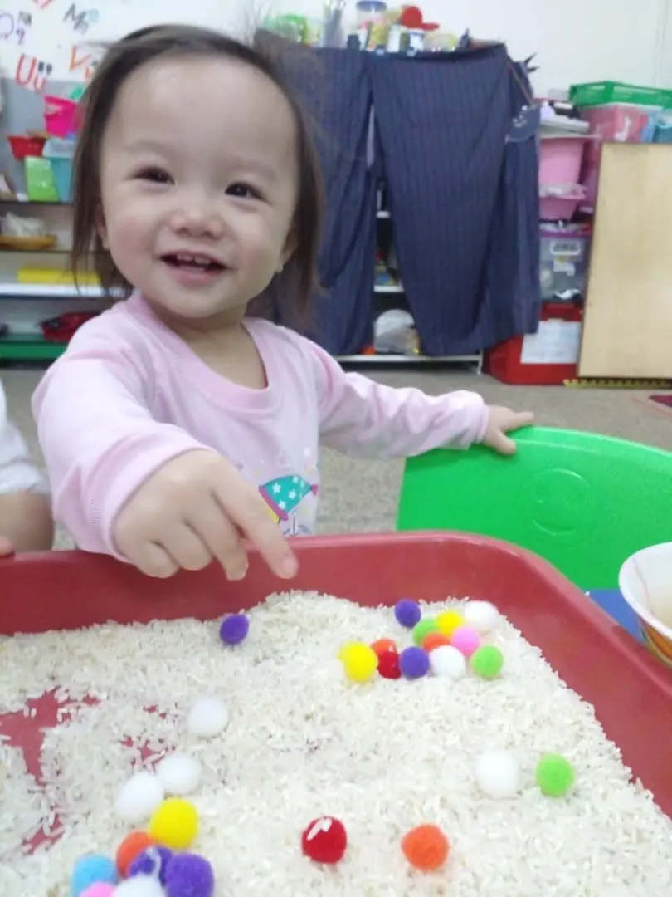
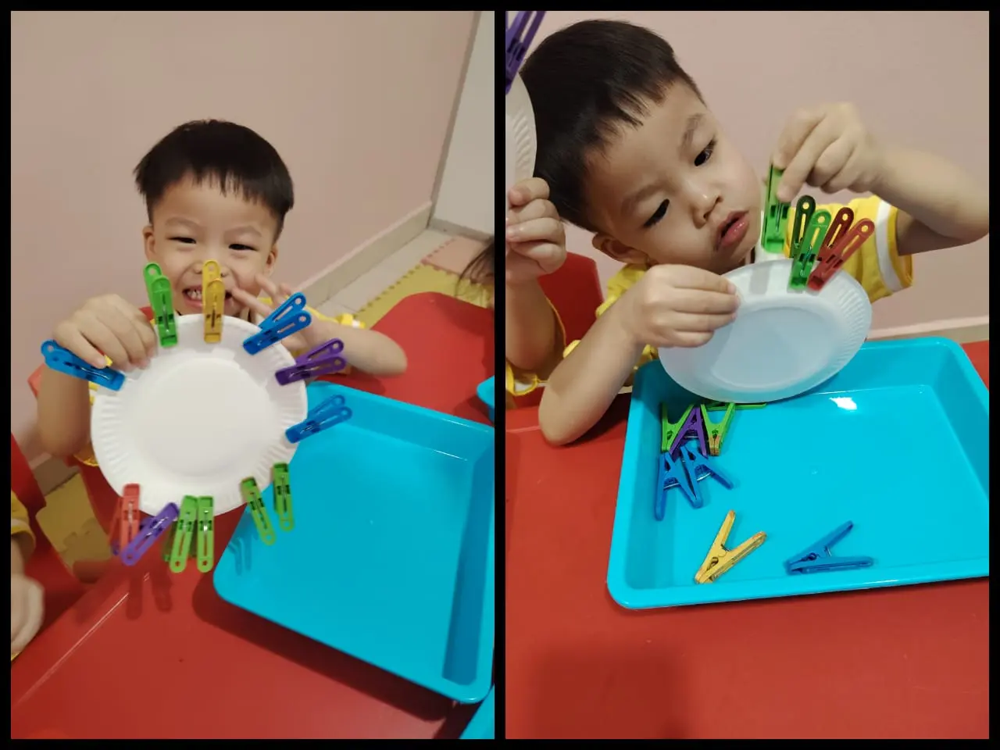
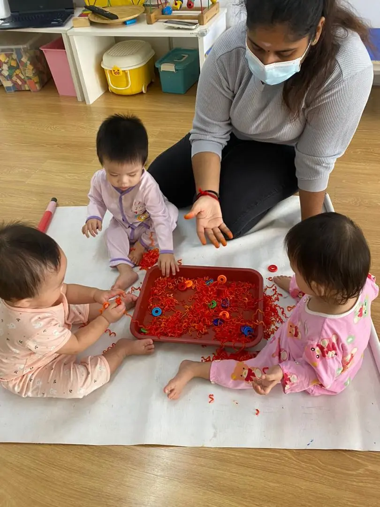
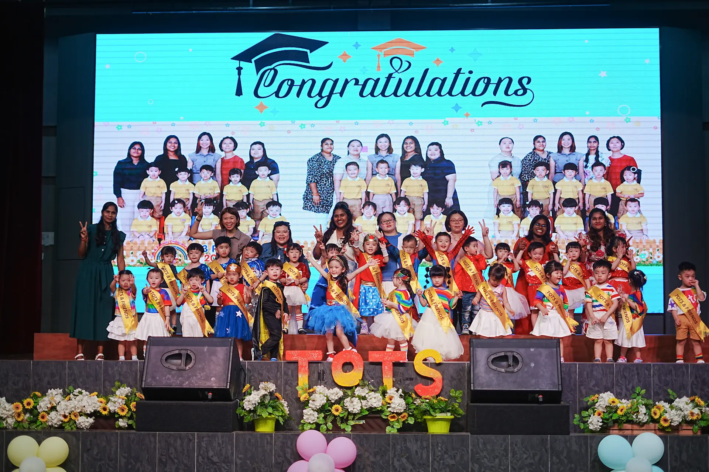

Where it all began
We opened with ten children and one simple goal: a warm, safe place where every child feels seen and looked after.
Tots & Friends started in Jenjarom with one classroom and ten children. Today we're a family of hundreds. Here's how we got here, one year at a time.
2018
We opened with ten children and one simple goal: a warm, safe place where every child feels seen and looked after.
2019
We opened our first play-based classroom on site, made for 3-year-olds. Children learn best by exploring and pretending, so we built the room for exactly that.



2020
When the pandemic closed our doors, we took classes online. For nearly two years, children kept learning and families kept in touch, all from home.
2023
Our doors opened again and the classrooms filled back up. We also started taking children from 1 year old, our youngest yet.


2025
Our children put on their first concert, in a full-size hall. We also joined Tadika Pelita Ilmuku for a Family Day and Sports Day at the SJC Jenjarom basketball court. Two schools, one very loud day.

2026
We launched Oodlin, a platform that links parents with the centre. You can see your child's activities, milestones and little moments as they happen.
They shape everything here, from how the classrooms are set up to how we say hello at the door.
Our mission
We look after the whole child: how they feel, how they get on with other children, and how they learn. A child who feels safe and valued is ready to explore.
Our vision
So much of who a child becomes starts in the first few years. We fill those years with play, friends and new things to try, and we keep families, culture and community close the whole way.
Our philosophy
We don't force learning. Children learn on their own when the room around them is right. We follow what they're curious about, and let each child move at their own speed.
Come and see the classrooms. We'd love to meet you both.